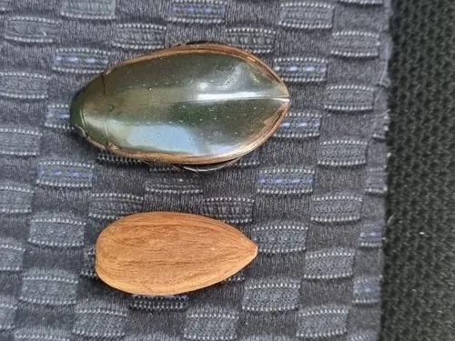

昆虫 · 动物界
黄缘真龙虱 Cybister tripunctatus

善于潜水捕食的甲虫，身体椭圆、后足特化成游泳足，鞘翅边缘呈黄色，生活在池塘和水田中。
- 分类
- 门节肢动物门纲昆虫纲目鞘翅目科龙虱科属真龙虱属
- 栖息环境
- 池塘、水田、沟渠与缓流，成虫和幼虫都在水中生活
- 地理分布
- 中国、日本和东南亚等地
- 保护级别
- 暂无评估
物种志
黄缘真龙虱成虫体长约 2.5–3.5 cm，体呈椭圆形，背面隆起，体色黑褐至墨绿色，鞘翅边缘有黄褐色或黄色的窄带，因此得名；后足特化成扁平的游泳足，上面有一排长毛，适合划水。
它生活在池塘、水田、沟渠和缓流中，成虫和幼虫都是捕食性的，捕食水生昆虫、小鱼、蝌蚪和虾类。成虫善于潜水，可携带气泡在水下活动，受惊时能迅速游走，夜晚有趋光性。幼虫生活在水中，身体细长，用上颚夹住猎物吸食体液。黄缘真龙虱分布于中国、日本和东南亚等地，是淡水生态中的捕食者；在部分地区成虫被当作食用昆虫，但捕捉和食用需注意卫生。
形态与习性
- 食性捕食水生昆虫、小鱼、蝌蚪和虾类
- 体长约 2.5–3.5 cm
- 识别鞘翅边缘有黄色窄带，后足为游泳足
- 习性善于潜水，能携带气泡在水下活动，夜间趋光
- 分布中国、日本和东南亚
趣味知识
- 黄缘真龙虱的鞘翅边缘有一圈黄色，名字由此而来。
- 它的后足扁平成桨状，上面长满毛，划水非常有力。
- 潜水时它会在身体下方携带一个气泡，用来在水中呼吸。